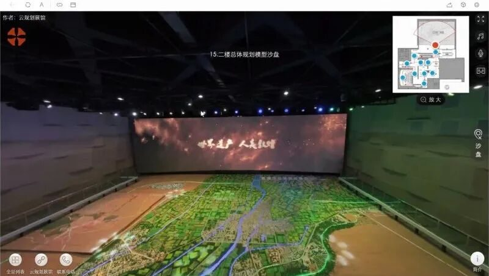
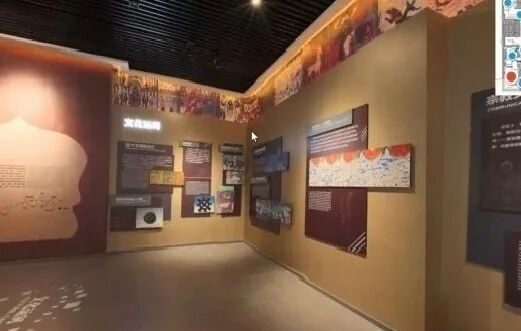
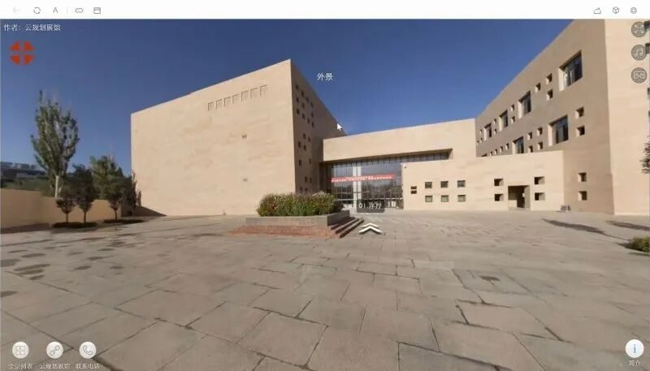
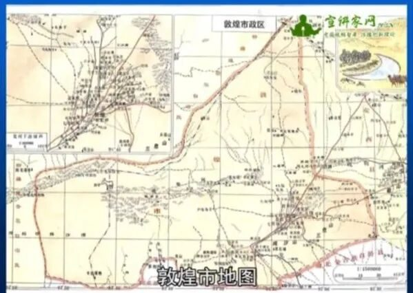
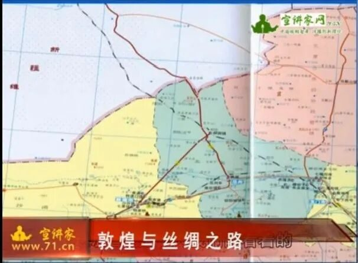

【行者无疆 聆谂丝韵】无关迟暮，不问翻覆


无关迟暮，不问翻覆
声声梵音，阵阵驼铃
丝绸古道烟波浩渺
朝代兴衰，岁月更迭
千年敦煌源远流长
潜心调研，虔诚叩问
行者踽踽聆谂丝韵
敦煌，曾经辉煌，也曾经被遗忘。
风云际会，她曾见证古老的中华帝国和广袤辽阔的中亚地区无数的历史变迁和盛衰荣辱；当朔风和黄沙蚀尽最后一丝荣光，她终究难逃盛极而衰的宿命；历经尘封，20世纪初她重新走进世人的视野，中国、古印度、古希腊、中亚文明，四种古老的旋律在这里汇成了千古绝唱。
——敦煌城市规划馆
实践首日的上午，
行者端坐家中
轻击屏幕，
进入线上展馆，
在古典文化与现代科技的交融中，
触摸千年敦煌的历史脉络。




以敦煌千载历史变迁为线，城市规划馆将千载敦煌梦娓娓道来，且看行脚的僧徒一步一叩而来，不绝的商旅满载货物而去，他们来往络绎，共同构筑起敦煌旧日的繁荣；借现代科技的鬼斧神工，城市规划馆大笔勾勒出城市的发展蓝图，只见敦煌古城在时代发展的浪潮中不断蓄力，静候东风再起、迎来复兴。


——“敦煌与丝绸之路”讲座
时间悄然流逝，转眼已是红日西斜。在著名敦煌学专家郑炳林的讲座中，行者们走近敦煌与古丝绸之路的前世今生。从丝路的诞生讲起，至丝路的衰落而止，郑老师引经据典，带领行者们凿穿宗教民俗、历史地理、中西文化交流等多个维度，全方位、多角度地了解“敦煌与丝绸之路”的发展变迁。


敦煌是丝路的“华戎所交，一大都会”，丝路经敦煌成贯通中西的玉带彩绸，她们相互守望，相依相偎，书写了一卷卷经世传奇。
“敦煌把艺术融进每一寸墙壁，把灵魂融进每一种艺术，传世的敦煌，万古流芳”。历经千年，无数虔诚的心曾踏上路途，朝圣这片荒芜之中的精神家园。
行者，亦在朝圣途中。
来源 | 行者无疆实践团
文字 | 苏亚男
排版 | 张清雅
审核 | 康艳虎 张清雅
行者无疆实践团
QQ：2758025831

随行者一起认识世界
长按二维码